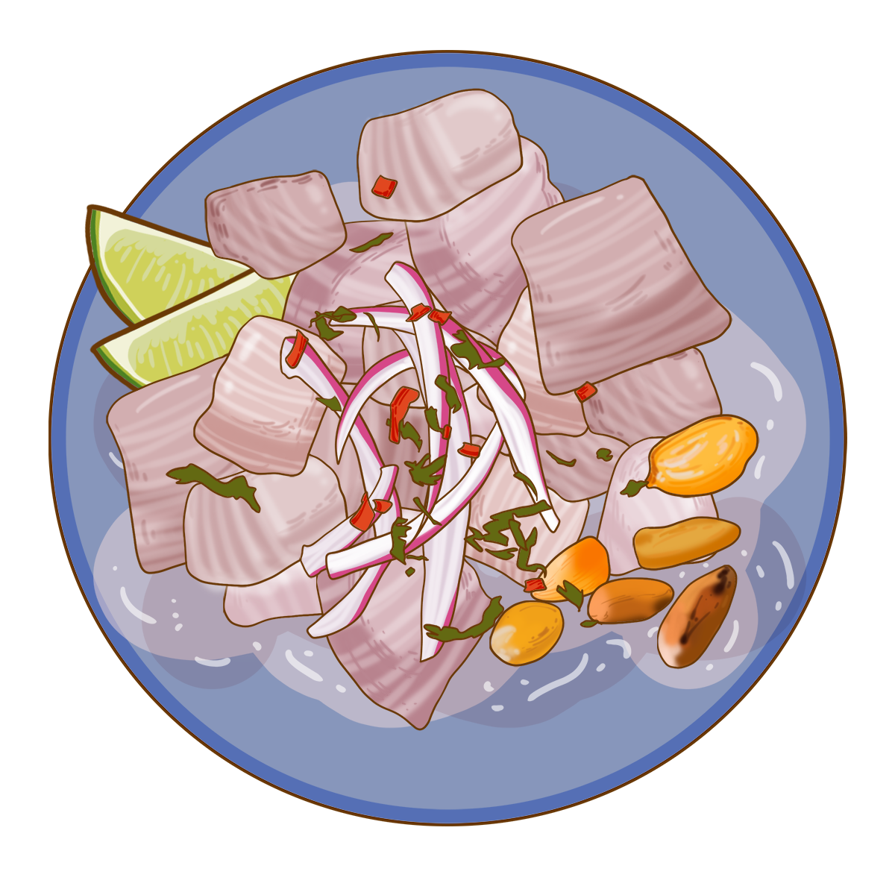
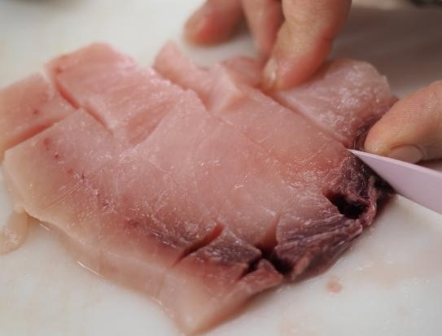
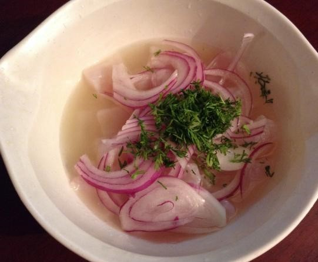
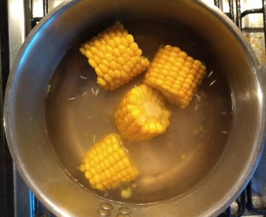

El ceviche es un plato típico de la gastronomía peruana y ha tenido tanto éxito que sus sabores se
han extendido a otros países latinoamericanos. Hay muchas versiones de ceviche y es imposible decir
que una sola es la correcta, pero en esta oportunidad compartiremos contigo una receta de ceviche
peruano que intenta rescatar todo lo tradicional del delicioso ceviche original del Perú.
Muchos disfrutan el ceviche o cebiche solo, pero también puedes acompañarlo con ricas guarniciones.
En este caso, hemos utilizado camote, maíz tierno y unas hojas de lechuga para refrescar. Te
invitamos a probarlo y a que descubras cómo hacer ceviche peruano de forma fácil y
accesible para todos los niveles.
Cómo hacer Ceviche peruano:
1
Lo primero que debes hacer para poder elaborar la receta fácil de ceviche peruano es exprimir los
12 limones para extraer su jugo, resérvalo para más adelante. Luego, corta el pescado en
trozos de 3 centímetros, aproximadamente. Coloca los trozos en el recipiente que
vayas a utilizar para servir el
plato.

2
Mezcla el pescado con el ají amarillo picado, el caldo de pescado y el cilantro. Coloca también
la cebolla cortada en julianas y el ajo machacado. Déjalo reposar unos
minutos para que se marine bien y se impregne de todos los sabores.

3
Salpimienta al gusto y coloca a un lado del plato el camote sancochado, la
lechuga y el maíz tierno también hervido. Puedes complementarlo con algo que te guste.

4
Después, vierte el zumo de limón por todo el plato de manera que quede todo bien
cubierto. Por último, corta una lámina de ají limo rojo y colócala a modo de decoración.
Resérvalo en el
frigorífico para que se enfríe, puesto que este es un plato que se sirve frío. El ceviche
peruano es
un plato que actúa como aperitivo, por lo que puedes acompañarlo con un arroz con camarones o un
delicioso salmón con salsa de gambas. ¡Listo para comer!


 Dificultad baja
Dificultad baja